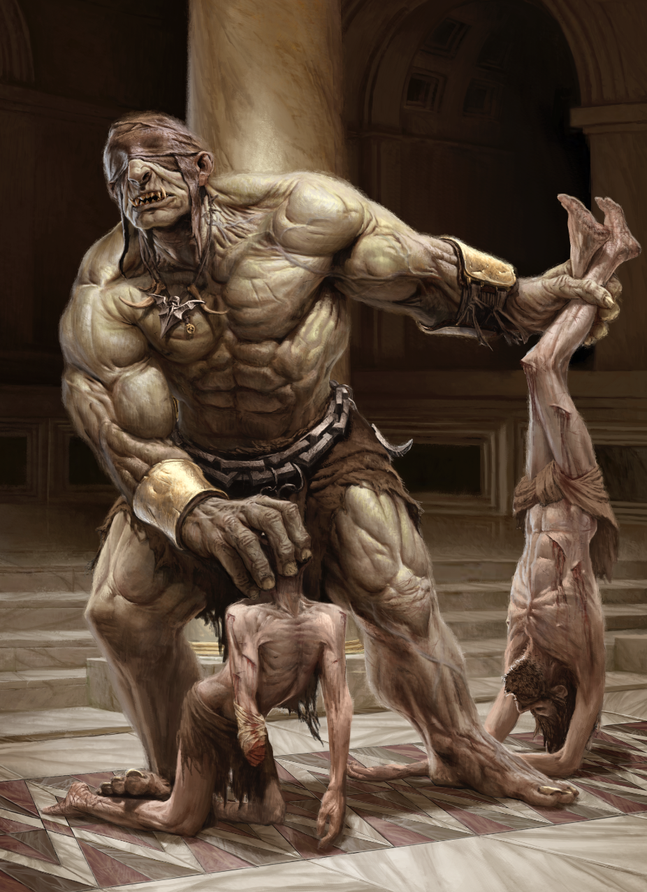
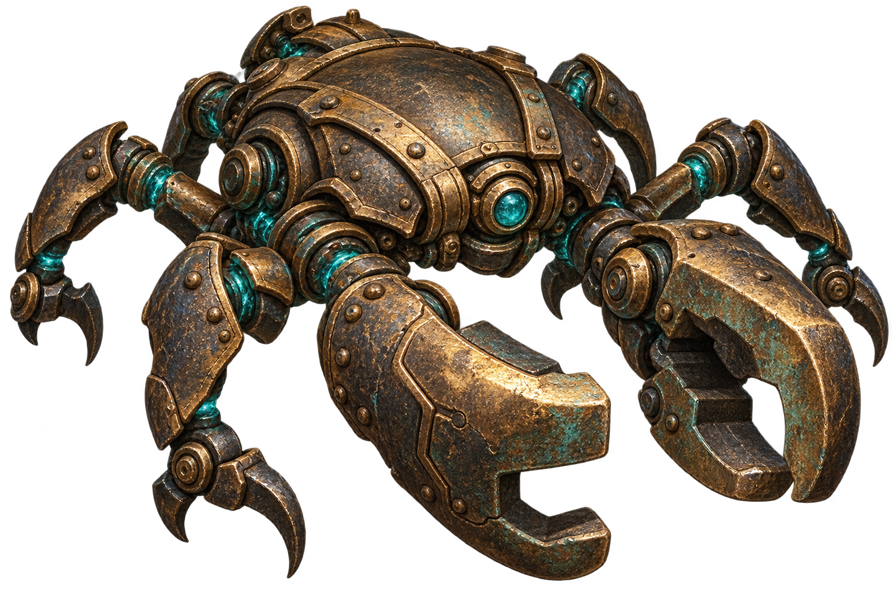
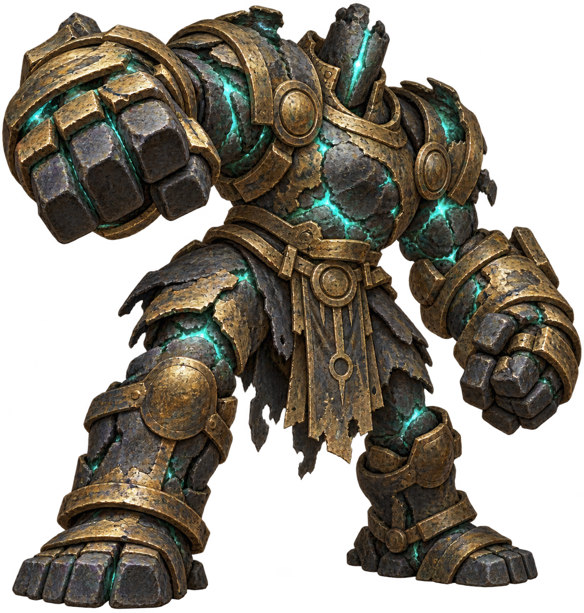

O carcereiro cego
Um gigante vendado que conduz prisioneiros acorrentados. Tateou a caverna e provocou o desabamento; depois, o grupo escapou durante o ataque das arraias. Jeremias também foi morto por uma pedra arremessada por um gigante cego na exploração solitária.

Arraias e kyrion
Criaturas semelhantes a arraias voadoras atacaram o gigante na ponte. Os kyrion, por sua vez, recolhem almas e tentaram capturar os personagens no lago; havia um líder, conjuradores e combatentes com redes.
Fixadores
Robôs semelhantes a caranguejos, com pinças e um casco resistente. Foram encontrados guardando a oficina e acompanhando o golem. Gary é um exemplar diferente, grande e vermelho, recuperado pelo grupo.

O golem de serviço
Uma máquina de quase seis metros chegou à sala circular arrastando a Modeladora. Fechou as saídas, absorveu parte da energia das magias e anunciou áreas de impacto. Foi desativada quando o grupo derrubou duas estruturas sobre ela.

Auxiliares e guindastes
Os auxiliares usam ferramentas e podem reparar outros robôs. Guindastes trabalham com cargas e materiais; um montou a ponte de madeira sobre a falha. Os cinco auxiliares recuperados estão no templo para ajudar nas tarefas.